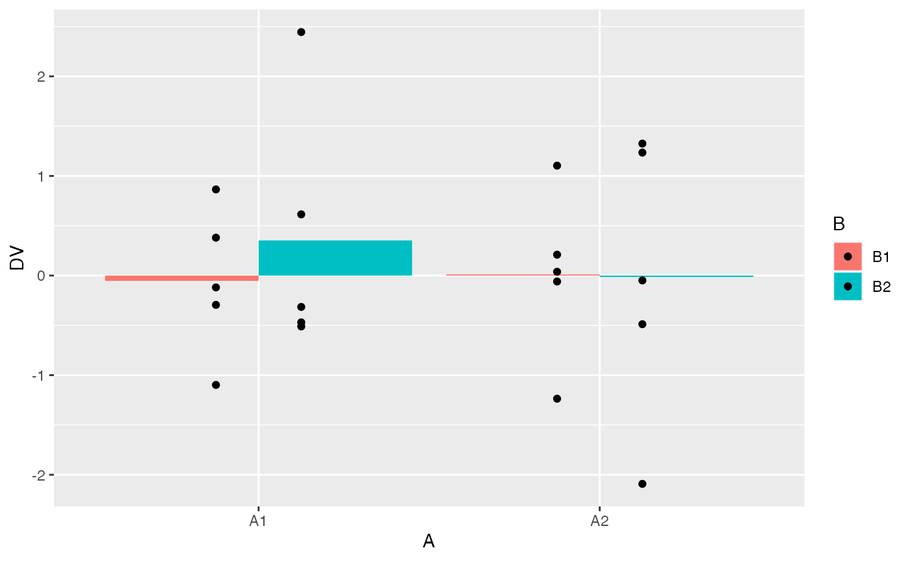

Lab7_Factorial_ANOVA.RmdChapter 16 from Abdi et al. (2009). See also Chapters 9 and 10 from Crump et al. (2018) on factorial designs.
This lab includes practical and conceptual introduction to factorial ANOVAs in R. The practical sections show how to use the aov() function to compute ANOVAs for designs with multiple independent variables, and shows how to compute the textbook examples in R. The conceptual sections make use of R as a tool to illustrate the ideas of main effects and statistical interactions.
The aov() function we have used for one-factor ANOVAs will also conduct ANOVAs with mutiple factors. The new requirements are:
A long dataframe with columns for each factor (independent variable) and measurements (dependent variable)
A formula instructing the aov() function to compute the intended ANOVA
Designs with multiple independent variables can become fairly complicated. This example uses a 2x2 design. There are two independent variables with two levels each. The design is crossed, or fully factorial, such that each level of one IV is paired with every level of the other IV.
The formula for aov() is similar to before. The general syntax is DV_column_name ~ IV1_column_name * IV2_column_name. The most important new element is the * symbol. This instructs the aov() function to compute all of the possible main effects and interactions.
In the example below I replaced each of the variable names with the names of the respective columns in the factorial_data tibble.
aov_out <- aov(DV ~ A*B, data = factorial_data)
summary(aov_out)
#> Df Sum Sq Mean Sq F value Pr(>F)
#> A 1 0.287 0.2871 0.276 0.607
#> B 1 0.378 0.3781 0.363 0.555
#> A:B 1 1.450 1.4497 1.393 0.255
#> Residuals 16 16.650 1.0406
model.tables(aov_out, type = "means")
#> Tables of means
#> Grand mean
#>
#> -0.4818831
#>
#> A
#> A
#> L1 L2
#> -0.6017 -0.3621
#>
#> B
#> B
#> L1 L2
#> -0.6194 -0.3444
#>
#> A:B
#> B
#> A L1 L2
#> L1 -0.4700 -0.7334
#> L2 -0.7688 0.0447Briefly, if you had factorial design with three IVs, you would another * in the formula along with the name of the third IV. For example, DV_name ~ IV1_name * IV2_name * IV3_name.
As an exercise, consider how you would modify the above example code to create simulated random data for a design with three IVs, each with two levels. This would be defined as a 2x2x2 design. I’ve provided example code below.
n <- 12
factorial_data <- tibble(A = factor(rep(c("L1","L2"), each = n)),
B = factor(rep(rep(c("L1","L2"), each = n/2),2)),
C = factor(rep(c("L1","L2"), n)),
DV = rnorm(n*2,0,1))
summary(aov(DV ~ A*B*C, data = factorial_data))
#> Df Sum Sq Mean Sq F value Pr(>F)
#> A 1 1.48 1.4835 0.679 0.422
#> B 1 0.01 0.0140 0.006 0.937
#> C 1 2.20 2.2013 1.007 0.330
#> A:B 1 0.65 0.6517 0.298 0.593
#> A:C 1 2.08 2.0846 0.954 0.343
#> B:C 1 0.19 0.1859 0.085 0.774
#> A:B:C 1 1.00 1.0032 0.459 0.508
#> Residuals 16 34.96 2.1850When you are analyzing real data you may want to accomplish a number of analysis tasks, such as preserving the data in long-form, looking at means in table, looking at means and data points in graphs, and printing ANOVA summary tables. The following example code shows these steps in one snippet.
#load libraries
library(dplyr)
library(ggplot2)
library(patchwork)
# simulated data (pretend running an experiment)
n <- 10
factorial_data <- tibble(A = factor(rep(c("A1","A2"), each = n)),
B = factor(rep(c("B1","B2"), n)),
DV = rnorm(n*2,0,1))
# Look at the means in a table
factorial_data %>%
group_by(A,B) %>%
summarise(mean_DV = mean(DV))
#> # A tibble: 4 × 3
#> # Groups: A [2]
#> A B mean_DV
#> <fct> <fct> <dbl>
#> 1 A1 B1 -0.0269
#> 2 A1 B2 -0.0989
#> 3 A2 B1 -0.418
#> 4 A2 B2 -0.632
# look at the means in a plot
factorial_data %>%
ggplot(aes(y=DV, x=A, group = B,fill=B))+
geom_bar(stat="summary", fun = "mean", position="dodge") +
geom_point(position = position_dodge(width=0.5))
# look at plots of the main effects and interaction
A <- factorial_data %>%
group_by(A) %>%
summarise(mean_DV = mean(DV)) %>%
ggplot(aes(y=mean_DV, x=A))+
geom_bar(stat="identity", position="dodge") +
ggtitle("Main effect A")
B <- factorial_data %>%
group_by(B) %>%
summarise(mean_DV = mean(DV)) %>%
ggplot(aes(y=mean_DV, x=B))+
geom_bar(stat="identity", position="dodge")+
ggtitle("Main effect B")
AB <- factorial_data %>%
group_by(A,B) %>%
summarise(mean_DV = mean(DV)) %>%
ggplot(aes(y=mean_DV, x=A, fill=B))+
geom_bar(stat="identity", position="dodge")+
ggtitle("AxB Interaction")
# patchwork formula
(A+B)/AB
# ANOVA table
# print to console
aov_out <- aov(DV ~ A*B, data = factorial_data)
summary(aov_out)
#> Df Sum Sq Mean Sq F value Pr(>F)
#> A 1 1.067 1.0675 0.721 0.408
#> B 1 0.103 0.1027 0.069 0.796
#> A:B 1 0.025 0.0255 0.017 0.897
#> Residuals 16 23.688 1.4805
# ANOVA means
# print to console
model.tables(aov_out, type = "means")
#> Tables of means
#> Grand mean
#>
#> -0.2939377
#>
#> A
#> A
#> A1 A2
#> -0.0629 -0.5250
#>
#> B
#> B
#> B1 B2
#> -0.2223 -0.3656
#>
#> A:B
#> B
#> A B1 B2
#> A1 -0.0269 -0.0989
#> A2 -0.4176 -0.6323By default the aov() function computes model I sums of squares for fixed effects. Here we use the aov() function to compute the “cute cued recall” example in section 16.7. Represent the data from table 16.3, generate a plot similar to figure 16.4, compute the ANOVA table from page 306.
a1b1 <- c(11,9,7,11,12,7,12,11,10,10)
a1b2 <- c(12,12,7,9,9,10,12,10,7,12)
a2b1 <- c(13,18,19,13,8,15,13,9,8,14)
a2b2 <- c(13,21,20,15,17,14,13,14,16,7)
a3b1 <- c(17,20,22,13,21,16,23,19,20,19)
a3b2 <- c(32,31,27,30,29,30,33,25,25,28)
recall_data <- tibble(words_recalled = c(a1b1,a1b2,
a2b1,a2b2,
a3b1,a3b2),
A = rep(c("12 words",
"24 words",
"48 words"), each = 20),
B = rep(rep(c("Free recall",
"Cued Recall"), each = 10),3)
)
ggplot(recall_data, aes(x=A, y=words_recalled, group = B, linetype=B))+
geom_point(stat="summary", fun="mean")+
geom_line(stat="summary", fun="mean")
aov_out <- aov(words_recalled ~ A*B, data = recall_data)
summary(aov_out)
#> Df Sum Sq Mean Sq F value Pr(>F)
#> A 2 2080 1040 115.56 < 2e-16 ***
#> B 1 240 240 26.67 3.58e-06 ***
#> A:B 2 280 140 15.56 4.62e-06 ***
#> Residuals 54 486 9
#> ---
#> Signif. codes: 0 '***' 0.001 '**' 0.01 '*' 0.05 '.' 0.1 ' ' 1
model.tables(aov_out, type="means")
#> Tables of means
#> Grand mean
#>
#> 16
#>
#> A
#> A
#> 12 words 24 words 48 words
#> 10 14 24
#>
#> B
#> B
#> Cued Recall Free recall
#> 18 14
#>
#> A:B
#> B
#> A Cued Recall Free recall
#> 12 words 10 10
#> 24 words 15 13
#> 48 words 29 19When both of the factors are random, the F-ratios are computed in a different manner (see textbook). This example covers section 16.8.4 from the textbook, involving example data with two random factors.
Note, we use the Anova() function from the car package, which provides a way to specify the type of sums of squares.
A1 <- c(127,121,117,109,107,101,98,94,97,89)
A2 <- c(117,109,113,113,108,104,95,93,96,92)
A3 <- c(111,111,111,101,99,91,95,89,89,83)
A4 <- c(108,100,100,92,92,90,87,77,89,85)
random_data <- tibble(scores = c(A1,A2,A3,A4),
A = factor(rep(1:4,each = 10)),
B = factor(rep(rep(1:5,each=2),4))
)
aov.lm <- lm(formula = scores ~ A*B, data = random_data)
car::Anova(aov.lm, type = 2)
#> Anova Table (Type II tests)
#>
#> Response: scores
#> Sum Sq Df F value Pr(>F)
#> A 1200 3 20 3.102e-06 ***
#> B 3200 4 40 2.836e-09 ***
#> A:B 240 12 1 0.4827
#> Residuals 400 20
#> ---
#> Signif. codes: 0 '***' 0.001 '**' 0.01 '*' 0.05 '.' 0.1 ' ' 1Finally, the example data will provide identical ANOVA tables for regardless of whether model I or II sums of squares is used. This is because the MSE for the interaction term and for the residual error term are the same for this example data. So, even though it looks like we are getting the same answer from the aov() function, it is computing model I and not model II.
Factorial designs include multiple independent variables and their interactions. As the number of independent variables increase, the number of independent tests also increase. For example, in a 2x2 design, there are three independent tests: one for each main effect, and one for the interaction.
Here we consider family-wise error rate issue with factorial ANOVAs. We will conduct a simulation of the null model for 10,000 2x2 ANOVAs. For each simulation we will record the p-value for each main effect and interaction. We will set an alpha criterion of p < .05. Our question is: out of 10,000 simulated experiments, how many type 1 errors will be made?
Remember, in a one-factor ANOVA, by definition the number of type I errors made by the null should be the same as the alpha criterion, or 5% in our case. Will this also be true for the 2x2 factorial ANOVA?
# set up tibble to save simulation values
save_sim <- tibble()
# loop to conduct i number of simulations
for(i in 1:10000){
#simulate null data for a 2x2
n <- 10
factorial_data <- tibble(A = factor(rep(c("L1","L2"), each = n)),
B = factor(rep(c("L1","L2"), n)),
DV = rnorm(n*2,0,1))
# compute ANOVA
output <- summary(aov(DV~A*B, data=factorial_data))
#save p-values for each effect
sim_tibble <- tibble(p_vals = output[[1]]$`Pr(>F)`[1:3],
effect = c("A","B","AxB"),
sim = rep(i,3))
#add the saved values to the overall tibble
save_sim <-rbind(save_sim,sim_tibble)
}What proportion of the total number of simulated experiments made a type 1 error?
type_I_errors <- save_sim %>%
filter(p_vals < .05) %>%
group_by(sim) %>%
count()
dim(type_I_errors)[1]/10000
#> [1] 0.141If we look at the type I error rates separately for each main effect and interaction what do we find?
save_sim %>%
group_by(effect) %>%
summarise(type_I_error = length(p_vals[p_vals < .05])/10000)
#> # A tibble: 3 × 2
#> effect type_I_error
#> <chr> <dbl>
#> 1 A 0.0535
#> 2 AxB 0.0522
#> 3 B 0.0489The conclusion here is Factorial ANOVAs are not protected against family-wise type I error rate. As you increase the number of IVs, you will increase the likelihood of finding at least one “significant” effect among the main effects and interactions.
Finally, here’s a quick alternative simulation using rbinom(). I set the number of simulations to 10000, the size to 3 (representing three independent tests), and I set the probability of getting 1 to .05. Last, I counted how many of results had a value greater than 0 (representing a type I error), and divided by 10000 (the number of simulations) to estimate the family-wise error rate.
Your assignment instructions are the following:
There are four problems each worth 3 points. Choose two of the four. If you complete more than two, then you will receive bonus points.
Explain the concept of main effects and interactions with an example using R. For example, this could include a definition of main effects and interactions and a figure depicting main effects and an interaction along with an explanation of the patterns for each. A major point of this problem is for you to to engage in the task of developing an explanation of these concepts that would 1) be helpful for you to understand the concepts, and 2) could be helpful for others to understand these concepts. (3 points)
Complete the 2x2 factorial lab found here https://crumplab.github.io/statisticsLab/lab-10-factorial-anova.html, up to section 10.4.8. More specifically, your task is to follow that lab exercise to load in the data, transform the data into long-format, conduct a 2x2 between subjects ANOVA, and write a short results section reporting the main effects and interaction. (3 points)
In chapter 10 of Crump et al. (2018), there is a discussion of patterns of main effects and interactions that can occur in a 2x2 design, which represents perhaps the simplest factorial design. There are 8 possible outcomes discussed https://crumplab.github.io/statistics/more-on-factorial-designs.html#looking-at-main-effects-and-interactions. Examples of these 8 outcomes are shown in two figures, one with bar graphs, and one with line graphs. Reproduce either of these figures using ggplot2. (3 points)
In the conceptual section of this lab we used an R simulation to find the family-wise type I error rate for a simple factorial design with 2 independent variables. Use an R simulation to find the family-wise type I error rate for a factorial design with 3 independent variables. (3 points)